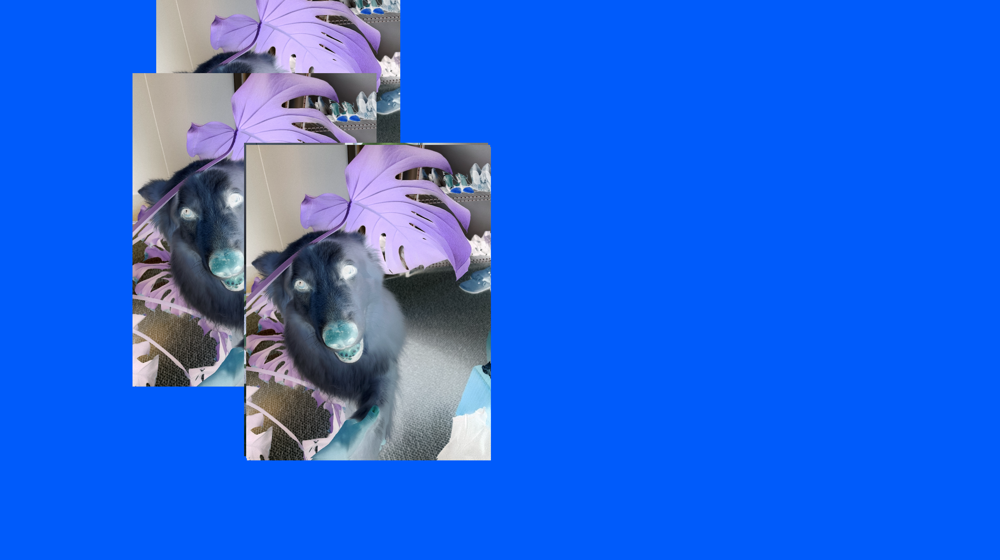
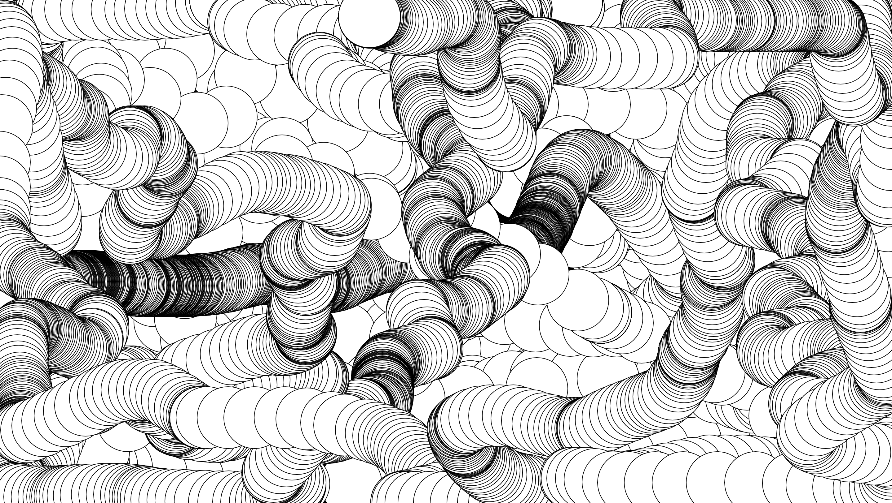
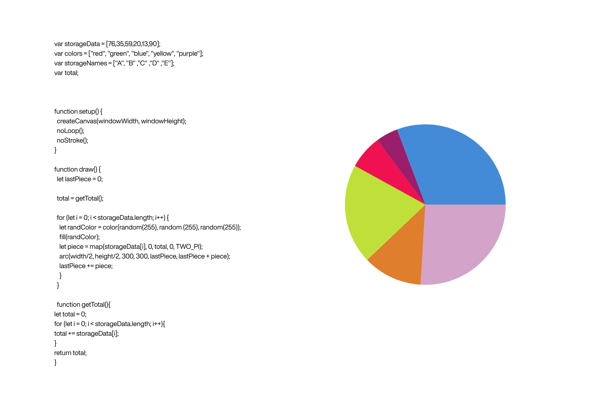
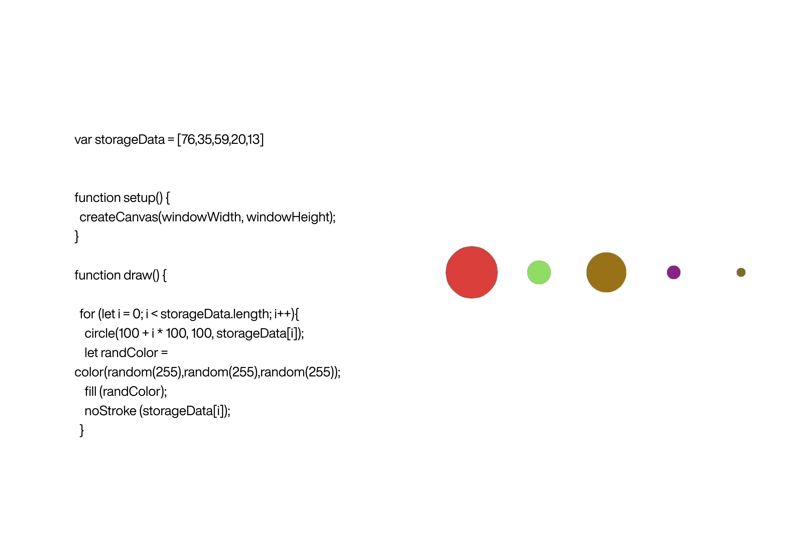

{1} This was the first in-class activity I did using posenet. I really like the interactivity of the mirrored image.

{2} In this sketch, the image acts as a mouse train. I inverted the image to achieve this x-ray effect.

{3} Here, a circle is generated at a specific rate relative to the mouse' movement . The circle leaves behind a visual trail.

{4} This was an in class activity that involved visualising a data set. By assigning the data numerables to a variable, we were able to map them through sections of a circle.

{4} This was also an in class activity that involved visualising a data set. Each circle is relative to a number; its size represents its quantity.